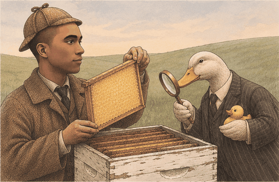

AI-assisted development experiments and mini-projects
 ★ Pick of the bunch
★ Pick of the bunch
Two teams, two spymasters, one-word clues. The spymasters see which cards belong to whom; everyone else is guessing — and one card on the board ends your game on the spot. Four ways to play, real-time sync so everyone shares a board over a video call, plus a clue log and game history to argue over afterwards.

A calm solo build of the board game. Stack coloured tokens on a hex board to grow trees, mountains, fields, rivers and buildings, complete animal habitats, and earn suns. Auto-saves, so you can put it down anytime.
Cooperative number game — and a good way to get to know people. Everyone describes a secret number using a theme, then you put the whole table in order without saying a digit.
Reiner Knizia's bidding game for 3–5 players. Compete for luxury status cards with a hand of money — but whoever has the least money left is thrown out before scoring.
A real-time memory card game. Name strange creatures as they appear, then race to shout the name first when one turns up again. Turn-based naming phase and keyboard shortcuts.

Three difficulty tracks in one: Trainer School, Pokémon League and Champion's Road. Addition and subtraction to 100, multiplication, division and word problems, with 40+ Pokémon and saved progress.
Grade 5–6 maths taught through Tony Stark's origin story, with Feynman-style explanations, an SAT vocabulary builder and enough gamification to keep going.

A live desk turns each coding-agent session into one live page (its goal, a Status of what the agent knows, is doing and will do next, and a log of every reply) so you can direct several complicated tasks at once, catch a wrong turn early and trust what comes back, without tracking anything by hand. One button copies a setup prompt: paste it into your agent and it installs the rules.
A picture-book deck about the live desk: running many Claude Code
sessions at once and answering each one right on its board with
>>.

Every merged PR gets a picture of the people behind it and a lesson from its diff, and reviewers are the stars. 261 art styles keep it fun. The code is MIT licensed, ready to clone for your team.
Drag a slider through a book's page numbers and watch each character move across the story's own map, leaving a trail behind them. Built for The Sword of Shannara and the Four Lands; point it at any book with a map and a JSON file.
A client-side TODO app that uses GitHub as its backend — your tasks live in a private repo, written through the GitHub API. No server of its own.